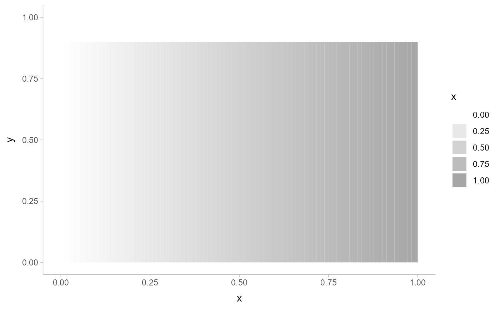

Secondary ggplot color scale that ramps from another color
Source:R/scale_colour_ramp.R
scale_colour_ramp.RdThis scale creates a secondary scale that modifies the fill or color scale of
geoms that support it (geom_lineribbon() and geom_slabinterval()) to "ramp"
from a secondary color (by default white) to the primary fill color (determined
by the standard color or fill aesthetics).
scale_colour_ramp_continuous( from = "white", ..., limits = function(l) c(min(0, l[[1]]), l[[2]]), range = c(0, 1), aesthetics = "colour_ramp" ) scale_color_ramp_continuous( from = "white", ..., limits = function(l) c(min(0, l[[1]]), l[[2]]), range = c(0, 1), aesthetics = "colour_ramp" ) scale_colour_ramp_discrete( from = "white", ..., range = c(0.2, 1), aesthetics = "colour_ramp" ) scale_color_ramp_discrete( from = "white", ..., range = c(0.2, 1), aesthetics = "colour_ramp" ) scale_fill_ramp_continuous(..., aesthetics = "fill_ramp") scale_fill_ramp_discrete(..., aesthetics = "fill_ramp")
Arguments
| from | The color to ramp from. Corresponds to |
|---|---|
| ... | Arguments passed to underlying scale or guide functions. E.g. |
| limits | One of:
|
| range | a numeric vector of length 2 that specifies the minimum and maximum
values after the scale transformation. These values should be between |
| aesthetics | Names of aesthetics to set scales for. |
Value
A ggplot2::Scale representing a scale for the colour_ramp and/or fill_ramp
aesthetics for ggdist geoms. Can be added to a ggplot() object.
See also
Other ggdist scales:
scales
Author
Matthew Kay
Examples
library(dplyr) library(ggplot2) library(distributional) tibble(d = dist_uniform(0, 1)) %>% ggplot(aes(y = 0, dist = d)) + stat_dist_slab(aes(fill_ramp = stat(x)))tibble(d = dist_uniform(0, 1)) %>% ggplot(aes(y = 0, dist = d)) + stat_dist_slab(aes(fill_ramp = stat(x)), fill = "blue") + scale_fill_ramp_continuous(from = "red")# you can invert the order of `range` to change the order of the blend tibble(d = dist_normal(0, 1)) %>% ggplot(aes(y = 0, dist = d)) + stat_dist_slab(aes(fill_ramp = stat(cut_cdf_qi(cdf))), fill = "blue") + scale_fill_ramp_discrete(from = "red", range = c(1, 0))